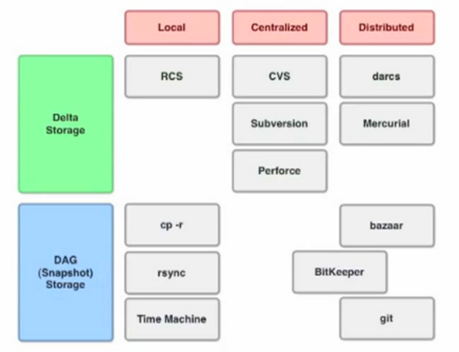
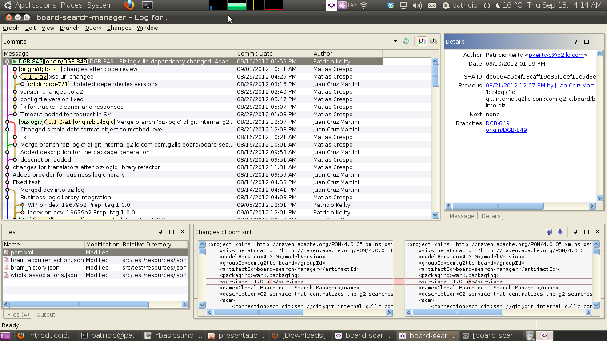

Introducción a GIT


Introducción a GIT por Patricio Keilty se encuentra bajo una Licencia Creative Commons Atribución-NoComercial-CompartirDerivadasIgual 3.0 Unported.
Contenido
- Intro
- Basics
- Branching
- Workflows
- References
Qué es git?
- es un sistema de _código abierto_ de control de versiones
- diseñado para ser: veloz, simple, distribuido, soporte desarrollo no lineal (muchas ramas en paralelo),maneje grandes proyectos de manera eficiente (tiempo y espacio)
- se desarrolló como control de versiones para el kernel del SO Linux en el 2005
- su autor es Linus Torvalds (autor tb del kernel linux)
segunda acepción: un rastreador estúpido/simple de info - stupid content tracker
Taxonomías SCM
Tipo almacenamiento:
- diffs/deltas
- DAG/snapshots
Taxonomías SCM
Deltas vs Snapshots


Taxonomías SCM
Clasificación según arquitectura
Taxonomías SCM
Matriz de clasificación
Características
Estados de un file

Conectándose a un repo
inicializando local
$ git initclonar un repo remoto
$ git clone git://github.com/schacon/grit.git
.git directory
$ tree .git
.git
|-- config
|-- description
|-- HEAD
|-- hooks
| |-- commit-msg.sample
|-- index
|-- info
| `-- exclude
|-- objects
| |-- info
| `-- pack
`-- refs
|-- heads
`-- tags
Chequeando estado
nada que commitear
$ git status
# On branch master
nothing to commit (working directory clean)
Chequeando estado
tengo modificaciones
$ vim README
$ git status
# On branch master
# Untracked files:
# (use "git add ..." to include in what will be committed)
#
# README
nothing added to commit but untracked files present (use "git add" to track)
Agregando nuevos files
$ git add README
$ git status
# On branch master
# Changes to be committed:
# (use "git reset HEAD ..." to unstage)
#
# new file: README
#
Subiendo modificaciones a staging
$ git status
# On branch master
# Changes to be committed:
# (use "git reset HEAD ..." to unstage)
#
# new file: README
#
# Changed but not updated:
# (use "git add ..." to update what will be committed)
#
# modified: benchmarks.rb
#
$ git add benchmarks.rb
$ git status
# On branch master
# Changes to be committed:
# (use "git reset HEAD ..." to unstage)
#
# new file: README
# modified: benchmarks.rb
#
Ignorando cambios (.gitignore)
$ cat .gitignore
*target/
*.settings/
*.classpath
*.project
*bin/
# a comment - this is ignored
*.a # no .a files
!lib.a # but do track lib.a, even though you're ignoring .a files above
/TODO # only ignore the root TODO file, not subdir/TODO
build/ # ignore all files in the build/ directory
doc/*.txt # ignore doc/notes.txt, but not doc/server/arch.txt
Viendo cambios con mas detalle
$ git status
# On branch master
# Changes to be committed:
# (use "git reset HEAD ..." to unstage)
#
# new file: README
#
# Changed but not updated:
# (use "git add ..." to update what will be committed)
#
# modified: benchmarks.rb
#
$ git diff
diff --git a/benchmarks.rb b/benchmarks.rb
index 3cb747f..da65585 100644
--- a/benchmarks.rb
+++ b/benchmarks.rb
@@ -36,6 +36,10 @@ def main
@commit.parents[0].parents[0].parents[0]
end
+ run_code(x, 'commits 1') do
+ git.commits.size
+ end
+
run_code(x, 'commits 2') do
log = git.commits('master', 15)
log.size
Viendo los cambios (staging o cacheados)
$ git diff --cached
diff --git a/README b/README
new file mode 100644
index 0000000..03902a1
--- /dev/null
+++ b/README2
@@ -0,0 +1,5 @@
+grit
+ by Tom Preston-Werner, Chris Wanstrath
+ http://github.com/mojombo/grit
+
+Grit is a Ruby library for extracting information from a Git repository
Commiteando los cambios
$ git commit
# Please enter the commit message for your changes. Lines starting
# with '#' will be ignored, and an empty message aborts the commit.
# On branch master
# Changes to be committed:
# (use "git reset HEAD ..." to unstage)
#
# new file: README
# modified: benchmarks.rb
~
~
~
".git/COMMIT_EDITMSG" 10L, 283C
Borrando
$ git rm grit.gemspec
rm 'grit.gemspec'
$ git status
# On branch master
#
# Changes to be committed:
# (use "git reset HEAD ..." to unstage)
#
# deleted: grit.gemspec
#
Renombrando o moviendo
$ git mv README.txt README
$ git status
# On branch master
# Your branch is ahead of 'origin/master' by 1 commit.
#
# Changes to be committed:
# (use "git reset HEAD ..." to unstage)
#
# renamed: README.txt -> README
#
git es suficientemente inteligente para detectarlo si no se lo informamos
$ mv README.txt README
$ git rm README.txt
$ git add README
Deshaciendo último commit: commit --amend
$ git commit -m 'initial commit'
$ git add forgotten_file
$ git commit --amend
Deshaciendo cambios: reset
supongamos este caso ...
$ git add .
$ git status
# On branch master
# Changes to be committed:
# (use "git reset HEAD ..." to unstage)
#
# modified: README.txt
# modified: benchmarks.rb
#
... y queremos volver para atrás y no commitear benchmarks.rb
$ git reset HEAD benchmarks.rb
benchmarks.rb: locally modified
$ git status
# On branch master
# Changes to be committed:
# (use "git reset HEAD ..." to unstage)
#
# modified: README.txt
#
# Changed but not updated:
# (use "git add ..." to update what will be committed)
# (use "git checkout -- ..." to discard changes in working directory)
#
# modified: benchmarks.rb
#
Revisando la historia
git log
$ git log
commit ca82a6dff817ec66f44342007202690a93763949
Author: Scott Chacon
Date: Mon Mar 17 21:52:11 2008 -0700
changed the version number
commit 085bb3bcb608e1e8451d4b2432f8ecbe6306e7e7
Author: Scott Chacon
Date: Sat Mar 15 16:40:33 2008 -0700
removed unnecessary test code
commit a11bef06a3f659402fe7563abf99ad00de2209e6
Author: Scott Chacon
Date: Sat Mar 15 10:31:28 2008 -0700
first commit
otras alternativas de formateo del output:
$ git log --stat
$ git log -p -2
Revisando la historia
..visualmente ;-)

Salvando el trabajo en progreso
usando el stash
$ git stash list
$ git stash save
$ git stash apply